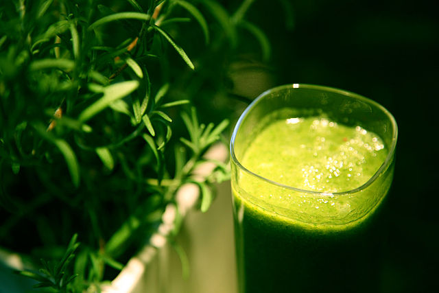

Protein Smoothie

Image by Joanna Slodownik from Secaucus, NJ, USA
Description
Listen, I get it. Some days you need to squeeze in that protein so your muscles can recover but you don't have the time to prepare a meal because you're too busy training. Lucky for you, I got you covered. My vegan protein smoothie is full of the stuff the Asgardian body craves.
Ingredients
- Fistful of spinach
- 1 ripe banana
- 1 cucumber
- 2 sticks of celery
- 1 1/2 cup Almond Breeze unsweetened almond milk
- 2 scoops Orgain Simple vanilla flavored protein powder
- 4 ice cubes
Steps
- Place all ingredients in a blender, push the blend button, and blend until smooth.
- Pour into your favorite drinking horn and enjoy.